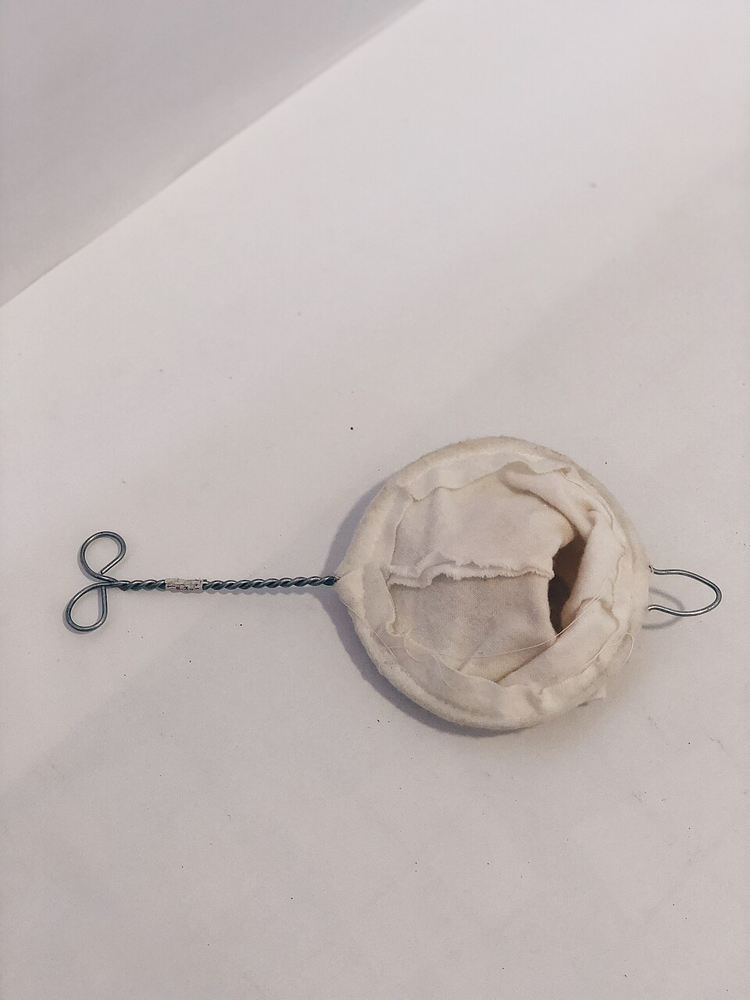

1910 · Fannie Merritt Farmer · BEVERAGES
After-Dinner Coffee
The Boston Cooking-School Cook Book


Historical Recipe
The following text is extracted from the 1910 edition, retaining historical terminology and quantities.
Original Ingredients & Directions
( Black Coffee, or Café Noir )
For after-dinner coffee use twice the quantity of coffee, or half the amount of liquid, given in previous recipes. Filtered coffee is often preferred where milk or cream is not 39 used, as is always the case with black coffee. Serve in after-dinner coffee cups, with or without cut sugar.
Coffee retards gastric digestion; but where the stomach has been overtaxed by a hearty meal, café noir may prove beneficial, so great are its stimulating effects.
Automatically extracted transcription; editorial verification pending. Historical instructions may not meet modern food-safety standards.